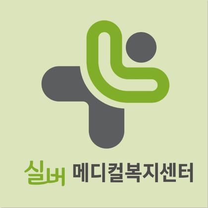
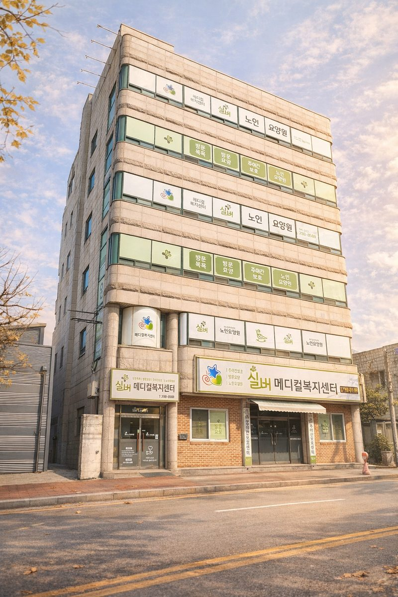
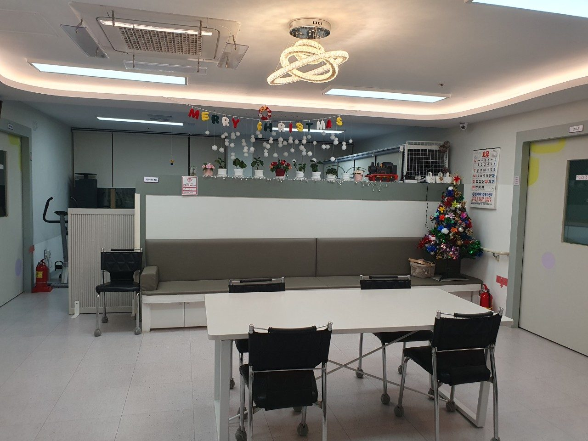
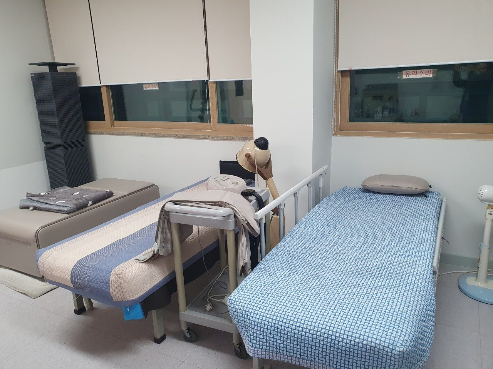
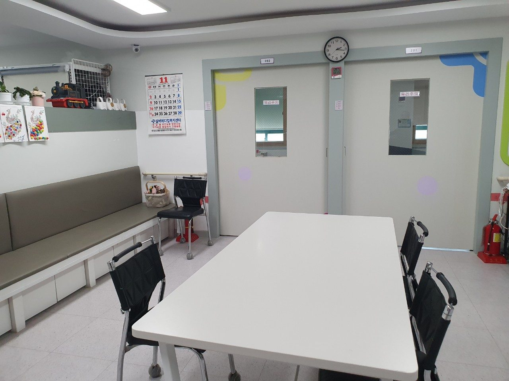
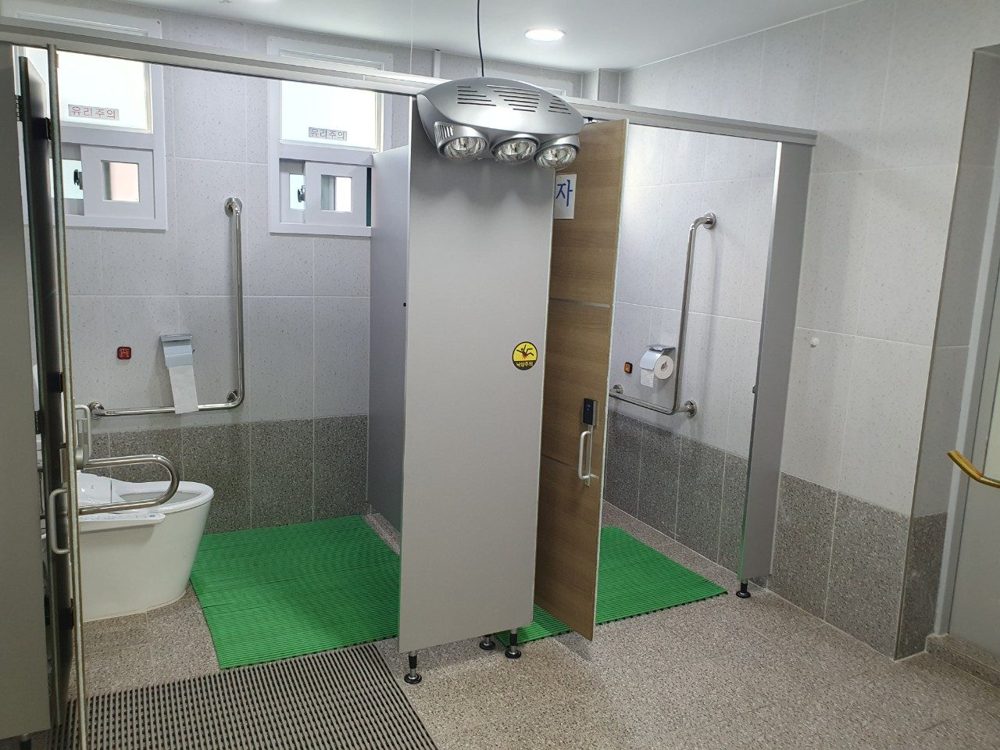
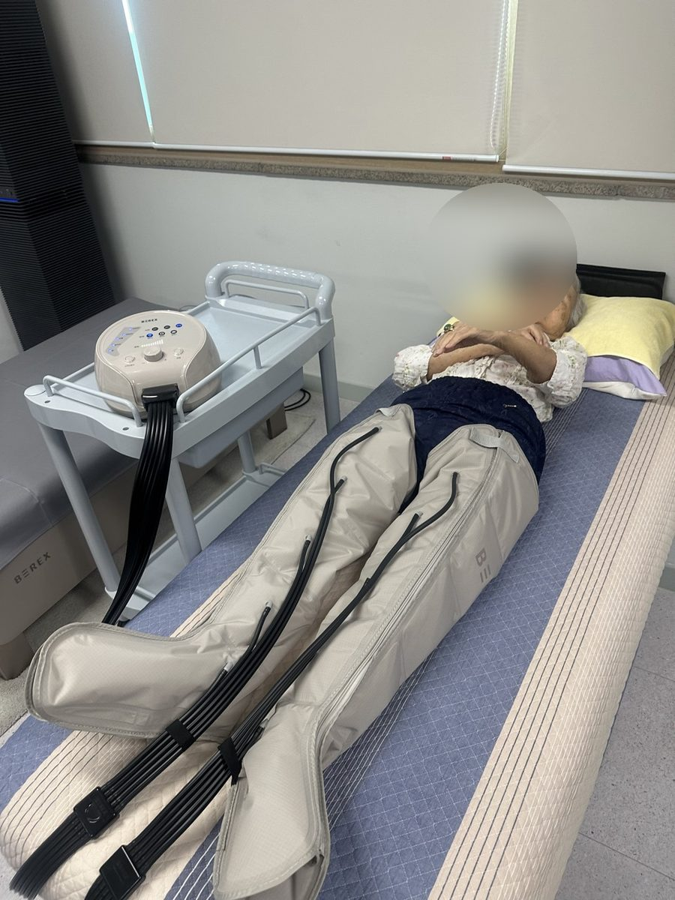
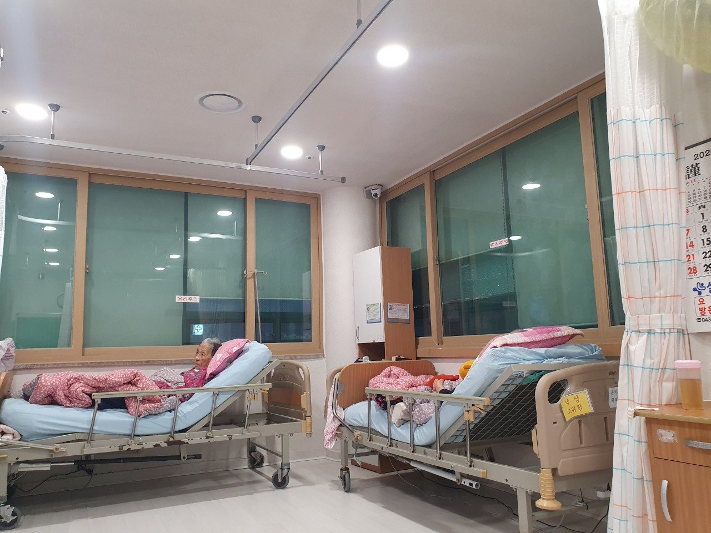
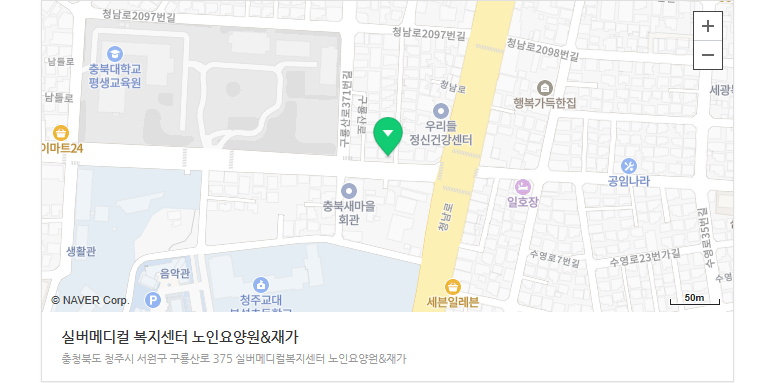

요양원
장기적인 생활 돌봄이 필요한 어르신께 안정적인 생활 공간과 일상 지원을 제공합니다. 식사, 위생, 휴식, 건강 상태를 꾸준히 살피며 편안한 생활을 돕습니다.

실버메디컬복지센터
요양원 · 주간보호 · 방문요양 · 단기보호
요양원, 주간보호, 방문요양을 함께 운영하며 어르신의 생활과 가족의 걱정을 가까이에서 살피는 실버메디컬복지센터입니다.
센터 소개
실버메디컬복지센터는 돌봄을 단순한 관리가 아니라 어르신의 하루를 함께 지켜드리는 일로 생각합니다. 익숙한 생활 리듬을 존중하고, 몸과 마음이 편안해질 수 있도록 작은 변화까지 세심하게 살핍니다.
보호자께는 어르신의 생활을 믿고 맡기실 수 있도록 안전, 청결, 소통을 꾸준히 챙기며 현실적인 돌봄을 제공하겠습니다.
서비스 안내
장기적인 생활 돌봄이 필요한 어르신께 안정적인 생활 공간과 일상 지원을 제공합니다. 식사, 위생, 휴식, 건강 상태를 꾸준히 살피며 편안한 생활을 돕습니다.
낮 동안 센터에서 식사, 프로그램, 휴식, 이동 지원을 받으실 수 있습니다. 보호자의 돌봄 부담을 덜고 어르신의 규칙적인 하루를 돕습니다.
어르신이 계신 가정으로 요양보호사가 방문하여 신체활동과 일상생활을 지원합니다. 익숙한 집에서 필요한 도움을 받을 수 있도록 상담합니다.
보호자의 일정, 회복기 돌봄, 일시적인 돌봄 공백이 있을 때 이용하실 수 있습니다. 짧은 기간에도 생활 리듬과 안전을 세심히 살핍니다.
시설 안내






보호자에게 드리는 약속
상담 안내
입소, 주간보호, 방문요양 이용 가능 여부와 준비하실 내용을 차근차근 안내드립니다. 장기요양등급, 이용 시간, 가족 상황을 알려주시면 상담에 도움이 됩니다.
